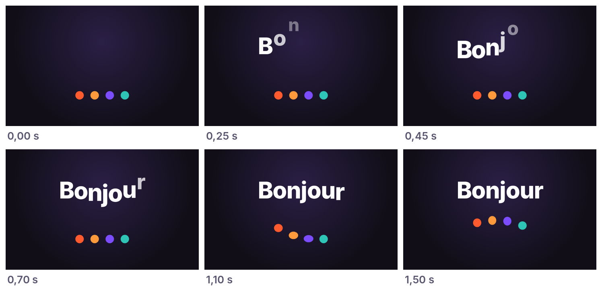
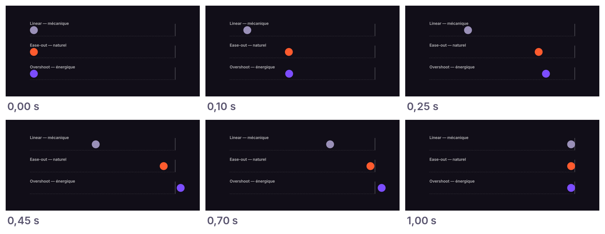
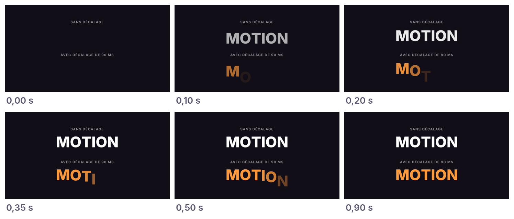
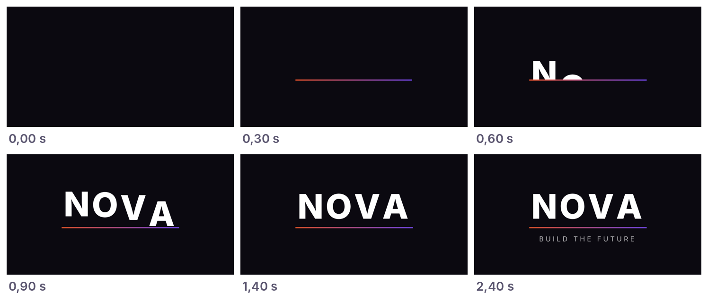

Avant toutComment lire ce livre
Ce livre est fait pour quelqu'un qui n'a jamais codé et n'a jamais ouvert un terminal. Si c'est votre cas, vous êtes au bon endroit.
Il est construit en trois niveaux. Ne sautez pas d'étape : chaque niveau s'appuie sur le précédent.
Niveau 1 Débutant
Installer, réussir une première animation, apprendre à dialoguer avec Claude. Chapitres 0 à 4.
Niveau 2 Intermédiaire
Animations plus riches pour le web, avec la librairie GSAP. Chapitre 5.
Niveau 3 Avancé
De vraies vidéos MP4 pour les réseaux sociaux, avec Remotion. Chapitre 6.
Les encadrés que vous allez croiser
Le résultat attendu, pour savoir si tout s'est bien passé.
Les problèmes les plus courants à cette étape, et quoi faire.
Pour les curieux (facultatif)
Le code ou les détails techniques. Vous pouvez toujours sauter ces encadrés : ils ne sont pas nécessaires pour réussir.
Sommaire
- Avant de commencer : installer Claude Code (20 min)
- Votre première animation en 10 minutes
- Parler comme un motion designer
- La boucle « vibe » : améliorer pas à pas
- Projet niveau 1 : animer votre nom ou votre logo
- Niveau 2 : des animations plus riches avec GSAP
- Niveau 3 : créer une vraie vidéo avec Remotion
- Le fichier CLAUDE.md : la mémoire de votre style
- 30 prompts classés par niveau
- Exporter et partager
- Dépannage : les problèmes de débutant
- Coûts et limites
- Glossaire
- Votre programme de 7 jours et checklist finale
Chapitre 0 Niveau 1Avant de commencer : installer Claude Code
Environ 20 minutes, une seule fois. Ensuite, vous n'y penserez plus.
De quoi avez-vous besoin ?
- Un ordinateur : Mac (macOS 13 ou plus récent), Windows 10 ou 11, ou Linux. Une tablette ou un téléphone ne suffisent pas pour ce livre.
- Un abonnement Claude payant (Pro au minimum). Le plan gratuit de claude.ai n'inclut pas Claude Code. Voir le chapitre 11.
- Un navigateur récent (Chrome, Edge, Firefox ou Safari) pour regarder vos animations.
- Une connexion internet.
Choisissez votre porte d'entrée
Il existe deux façons d'utiliser Claude Code. Les deux font exactement la même chose.
A. L'application de bureau Recommandé
Une application avec des fenêtres et des boutons, comme n'importe quel logiciel. Aucun terminal.
B. Le terminal
Une fenêtre où l'on tape du texte. Un peu plus intimidant au début, mais très pratique ensuite.
Si vous hésitez, prenez A. Vous pourrez passer à B plus tard.
Option A : l'application de bureau
- Allez sur claude.com/download et téléchargez l'application Claude pour votre ordinateur (Mac ou Windows).
- Installez-la comme n'importe quel logiciel, puis ouvrez-la et connectez-vous avec votre compte Claude.
- Ouvrez l'onglet Code de l'application.
- Quand l'application vous demande un dossier de travail, créez un nouveau dossier sur votre Bureau, nommé
mon-studio-motion, et choisissez-le.
Une zone de discussion où vous pouvez écrire à Claude, avec le nom de votre dossier affiché. C'est prêt : passez directement au chapitre 1.
Option B : le terminal
Un terminal, c'est une fenêtre où l'on donne des ordres à l'ordinateur en tapant du texte, appelés « commandes ». On tape (ou on colle) une commande, puis on appuie sur Entrée.
- Ouvrir le terminal.
- Mac : appuyez sur Cmd + Espace, tapez
Terminal, puis Entrée. - Windows : ouvrez le menu Démarrer, tapez
PowerShell, puis cliquez sur « Windows PowerShell ».
- Mac : appuyez sur Cmd + Espace, tapez
- Installer Claude Code. Copiez la commande qui correspond à votre système, collez-la dans le terminal et appuyez sur Entrée.
# Mac ou Linux curl -fsSL https://claude.ai/install.sh | bash # Windows (PowerShell) irm https://claude.ai/install.ps1 | iex
L'installation peut prendre une minute sans rien afficher. C'est normal, patientez. - Vérifier l'installation. Fermez le terminal, rouvrez-en un nouveau, puis tapez :
claude --version
- Créer votre dossier de travail et lancer Claude. Tapez ces commandes une par une :
# Aller sur le Bureau cd Desktop # Créer le dossier « mon-studio-motion » mkdir mon-studio-motion # Entrer dans ce dossier cd mon-studio-motion # Lancer Claude Code claude
Au premier lancement, une page s'ouvre dans votre navigateur pour vous connecter à votre compte Claude.
- À l'étape 3 : un numéro de version, par exemple
2.1.211 (Claude Code). - À l'étape 4 : un message de bienvenue de Claude Code et une zone où écrire.
- « command not found: claude » ou « claude n'est pas reconnu » : vous avez sans doute oublié de fermer et rouvrir le terminal. Si le problème persiste, prenez l'option A (application de bureau).
- Sur Windows, « irm n'est pas reconnu » : vous êtes dans l'« Invite de commandes » et non dans PowerShell. Ouvrez PowerShell.
- Sur Windows, le Bureau est introuvable : il est parfois dans OneDrive. Tapez
cd OneDrive\Desktop(oucd OneDrive\Bureau). - Autre erreur : copiez le message d'erreur et cherchez-le dans la page de dépannage officielle (code.claude.com/docs, rubrique « Troubleshoot installation »).
Comprendre les demandes de permission
Avant de créer un fichier ou de lancer une commande, Claude vous demande la permission. C'est une sécurité : rien ne se passe sur votre ordinateur sans votre accord.
- Pour vos projets d'animation, vous pouvez accepter les créations et modifications de fichiers dans votre dossier.
- Lisez la demande si Claude veut supprimer quelque chose ou agir en dehors de votre dossier. En cas de doute, refusez et demandez-lui : « Explique-moi ce que tu veux faire et pourquoi. »
Les 3 raccourcis à connaître (dans le terminal)
| Touche | Effet |
|---|---|
| Échap | Arrête Claude immédiatement s'il part dans la mauvaise direction. Vous pouvez ensuite le recadrer. |
| Échap Échap (deux fois) | Ouvre le menu « rewind » pour revenir en arrière à un moment précédent de la conversation et du code. Votre bouton « annuler ». |
| Maj + Tab | Change le mode de travail, par exemple le mode plan, où Claude réfléchit et vous propose un plan avant de toucher à quoi que ce soit. |
Dans l'application de bureau, vous retrouvez les mêmes possibilités sous forme de boutons.
Chapitre 1 Niveau 1Votre première animation en 10 minutes
Pas de théorie pour l'instant. On fait bouger quelque chose à l'écran, tout de suite.
Étape 1 : la demande
Dans Claude Code (application ou terminal), copiez-collez ce texte et envoyez-le :
Étape 2 : ce qui va se passer
Claude va réfléchir quelques secondes, puis vous demander la permission de créer le fichier. Voici à quoi ressemble l'échange (simplifié) :
Crée un fichier index.html tout simple…
Je vais créer une page avec le mot « Bonjour » animé et quatre balles qui rebondissent.
Créer le fichier index.html ? → Oui
C'est fait. Pour voir le résultat, ouvrez le dossier mon-studio-motion et double-cliquez sur index.html.
Acceptez la création du fichier.
Étape 3 : regarder le résultat
Ouvrez votre dossier mon-studio-motion (sur le Bureau) et double-cliquez sur index.html. Le fichier s'ouvre dans votre navigateur. Vous pouvez aussi demander à Claude : « Ouvre index.html dans mon navigateur. »

Le mot « Bonjour » qui apparaît en moins de 2 secondes, puis des balles qui rebondissent sans s'arrêter. Pour revoir l'animation, rechargez la page (F5, ou Cmd + R sur Mac).
- La page est blanche : dites à Claude « La page est blanche quand je l'ouvre, corrige le problème. »
- Je ne trouve pas le fichier : demandez « Dans quel dossier se trouve index.html exactement ? »
- Le fichier s'ouvre dans un éditeur de texte au lieu du navigateur : faites un clic droit sur le fichier, puis « Ouvrir avec » et choisissez votre navigateur.
Étape 4 : trois retouches pour vous entraîner
Envoyez ces demandes l'une après l'autre. Après chacune, rechargez la page dans le navigateur.
Pour les curieux : qu'a écrit Claude ?
Une page HTML (la structure : le texte, les balles) et du CSS (le style et les animations). Le cœur de l'animation des lettres ressemble à ceci :
span {
display: inline-block;
animation: tomber 0.7s cubic-bezier(.34, 1.56, .64, 1) both;
animation-delay: calc(var(--i) * 90ms); /* chaque lettre attend un peu plus */
}
@keyframes tomber {
from { transform: translateY(-120px); opacity: 0; }
to { transform: none; opacity: 1; }
}
« keyframes » décrit l'état de départ et l'état d'arrivée. Le navigateur calcule tout ce qu'il y a entre les deux.
Chapitre 2 Niveau 1Parler comme un motion designer
« Fais un truc stylé » donne un résultat moyen. Quelques mots précis donnent un résultat professionnel.
Bonne nouvelle : il suffit de 6 notions pour décrire presque n'importe quel mouvement.
1. La durée
Combien de temps dure le mouvement. Les animations d'interface sont beaucoup plus courtes qu'on ne l'imagine :
- 0,1 à 0,2 s : réaction à un clic ou un survol.
- 0,2 à 0,4 s : un élément qui apparaît.
- 0,4 à 0,8 s : un grand déplacement, un changement de page.
- 1 à 3 s : une petite séquence, un logo animé.
2. L'easing (la façon d'accélérer et de freiner)
Dans la vraie vie, rien ne démarre ni ne s'arrête d'un coup. L'easing décrit comment un objet accélère et ralentit. C'est la notion la plus importante du motion design.

| Mot à utiliser | Effet | Quand l'utiliser |
|---|---|---|
| linear | Vitesse constante, mécanique | Rotations infinies, textes qui défilent |
| ease-out | Arrive vite, freine en douceur | Tout ce qui entre à l'écran (le plus utile) |
| ease-in | Démarre doucement, accélère | Tout ce qui sort de l'écran |
| ease-in-out | Doux au départ et à l'arrivée | Déplacement d'un point à un autre |
| spring / ressort | Mouvement physique avec un petit rebond | Interfaces ludiques et vivantes |
3. L'overshoot (le dépassement)
L'objet va un peu trop loin, puis revient à sa place. Ça donne de l'énergie et du « pop ». À doser : trop d'overshoot fait « dessin animé ».
4. Le stagger (le décalage)
Quand plusieurs éléments s'animent, on les fait partir l'un après l'autre plutôt que tous ensemble. C'est ce qui rend une animation fluide et élégante.

5. L'anticipation
Un petit mouvement dans le sens inverse avant l'action, comme on plie les genoux avant de sauter. Ça rend le mouvement crédible.
6. Le chevauchement (overlapping)
L'étape suivante commence avant que la précédente soit tout à fait finie. Sans ça, une séquence paraît saccadée, comme une suite de diapositives.
Traduire une ambiance en mots
Vous savez ce que vous voulez ressentir ? Ce tableau vous donne les mots à mettre dans votre demande.
| Ambiance voulue | Ce qu'il faut demander |
|---|---|
| Premium, luxe | Mouvements lents (0,6 à 1 s), ease-in-out doux, peu d'éléments, beaucoup d'espace vide |
| Énergique, jeune | Durées courtes, ressort avec rebond, couleurs vives, décalage rapide |
| Tech, futuriste | Lignes qui se dessinent, effet glitch, mouvements nets, police monospace |
| Calme, bien-être | Fondus, éléments qui flottent lentement, boucles de 4 à 6 s |
| Sérieux, institutionnel | Glissements sobres en ease-out, pas de rebond, alignements stricts |
Pour aller plus loin : les 12 principes de l'animation
Ces six notions viennent des 12 principes de l'animation, formulés par les animateurs des studios Disney dans les années 1930 : squash & stretch (écraser et étirer), anticipation, mise en scène, animation directe ou pose à pose, follow-through & overlapping, slow in & slow out (l'easing), arcs, action secondaire, timing, exagération, volume, appeal. Vous pouvez les citer tels quels dans vos demandes : Claude les connaît.
Chapitre 3 Niveau 1La boucle « vibe » : améliorer pas à pas
La méthode qui fait la différence entre un résultat « généré par IA » et un résultat qui a du caractère.
Les 5 temps de la boucle
- Décrire. L'ambiance, ce qui bouge, la durée, et où ce sera utilisé.
- Laisser Claude créer. Acceptez une première version imparfaite : c'est un brouillon.
- Regarder. D'abord à vitesse normale, puis au ralenti (voir l'astuce plus bas). Notez ce qui vous gêne.
- Corriger. Une ou deux remarques à la fois, pas dix. Sinon Claude risque d'en oublier ou de tout casser.
- Sauvegarder. Dès qu'une version vous plaît, demandez à Claude de la sauvegarder.
Sauvegarder et revenir en arrière
C'est votre filet de sécurité. Deux méthodes, à utiliser ensemble :
- Revenir en arrière tout de suite : appuyez deux fois sur Échap (menu « rewind ») et choisissez le moment où tout allait bien. Ou écrivez simplement : « Annule ta dernière modification. »
- Garder des versions pour toujours : demandez à Claude d'utiliser Git, un outil qui garde un historique de toutes vos versions. Vous n'avez pas besoin d'apprendre Git, Claude s'en charge :
Les bons et les mauvais retours
| Retour flou | Retour efficace |
|---|---|
| « C'est bof. » | « Le titre arrive trop tard, il doit être lisible dès 0,5 s. » |
| « Plus dynamique. » | « Rends tout 1,5 fois plus rapide et ajoute un léger overshoot sur les entrées. » |
| « C'est bizarre. » | « Les cartes s'arrêtent toutes en même temps : décale leur arrivée de 50 ms. » |
| « Fais plus beau. » | « Remplace le fondu par un effet où le texte se dévoile du bas vers le haut. » |
Vous ne trouvez pas les mots ? Décrivez ce que vous ressentez, et demandez de l'aide : « Ça me paraît lourd et lent, mais je ne sais pas pourquoi. Propose-moi trois pistes. »
Trois astuces qui changent tout
Le ralenti révèle immédiatement les défauts qu'on ne voit pas à vitesse normale.
Les variantes : comparer est plus facile que décrire. Choisissez, puis affinez celle qui vous plaît.
Les réglages : vous trouvez le bon dosage à la main, puis vous dites à Claude « garde ces valeurs-là et retire le panneau ».
Montrer plutôt que décrire
Vous pouvez glisser une image dans la conversation (une capture d'écran, une affiche, un logo) : Claude sait les regarder. Par exemple : « Voici une capture d'une animation que j'aime. Inspire-toi de son style et de ses couleurs, pas de son contenu. »
/clear dans le terminal, ou « Nouvelle session » dans l'application), puis reformulez votre demande avec ce que vous avez appris.Chapitre 4 Niveau 1Projet : animer votre nom ou votre logo
On construit l'animation en 5 petites étapes, une demande à la fois. C'est exactement ainsi que travaillent les pros.

Conseil : commencez une nouvelle conversation et créez un sous-dossier pour ce projet. Écrivez par exemple : « Crée un dossier logo et travaille dedans pour la suite. »
- La base.
Crée un fichier logo.html sans rien installer : fond presque noir, et au centre le mot « [VOTRE NOM] » en blanc, très grand et en gras. Pas encore d'animation.Ce que vous devriez voir
Votre nom, immobile, au centre de la page.
- La ligne.
Ajoute sous le mot une fine ligne avec un dégradé orange vers violet. Au chargement, la ligne se dessine de gauche à droite en 0,4 s, en ease-out.
- Les lettres.
Maintenant, les lettres sont cachées au départ. Juste après la ligne, elles montent depuis la ligne, une par une, avec un décalage de 80 ms et un léger overshoot. On ne doit pas voir les lettres sous la ligne.Ce que vous devriez voir
Les lettres « sortent » de la ligne comme d'une fente. Si elles apparaissent toutes en même temps, dites : « Les lettres apparaissent toutes ensemble, je veux un décalage entre chaque lettre. »
- Le reflet.
Quand toutes les lettres sont arrivées, fais passer un reflet lumineux sur le mot, de gauche à droite, en 1 seconde.
- Le slogan et la finition.
Pour finir, fais apparaître en fondu sous la ligne le slogan « [VOTRE SLOGAN] », en petites majuscules espacées. Ajoute un bouton « Rejouer ». Si la personne a désactivé les animations dans son système, affiche directement l'état final sans mouvement.Sauvegarde cette version avec le nom « logo animé terminé ».
Et maintenant, affinez
Utilisez le ralenti du chapitre 3, puis essayez des corrections comme :
- « Les lettres font trop dessin animé : réduis l'overshoot de moitié. »
- « Ajoute une anticipation : juste avant que les lettres montent, la ligne s'écrase légèrement pendant 0,1 s. »
- « Utilise mon vrai logo : voici le fichier logo.svg. Fais en sorte que son contour se dessine, puis qu'il se remplisse de couleur. » (déposez d'abord votre fichier SVG dans le dossier du projet)
Pour les curieux : à quoi ressemble le code de l'étape 3 ?
.mot span {
display: inline-block;
animation: monter 0.7s cubic-bezier(.34, 1.4, .64, 1) both;
animation-delay: calc(450ms + var(--i) * 80ms);
}
@keyframes monter {
from { transform: translateY(110%); }
to { transform: none; }
}
.masque { overflow: hidden; } /* cache les lettres sous la ligne */
@media (prefers-reduced-motion: reduce) {
.mot span { animation: none; } /* respect des réglages d'accessibilité */
}
Le cubic-bezier(.34, 1.4, .64, 1) est un easing avec overshoot : le chiffre 1.4 signifie que la lettre dépasse sa position d'arrivée avant de revenir.
Chapitre 5 Niveau 2Des animations plus riches avec GSAP
Quand une animation comporte beaucoup d'étapes, ou qu'elle doit réagir au défilement de la page, le CSS seul devient difficile à manier. C'est là qu'intervient GSAP.
GSAP, c'est quoi ?
GSAP est une librairie, c'est-à-dire un ensemble d'outils déjà écrits par d'autres, que Claude peut utiliser dans votre page. C'est la référence du motion design sur le web. Elle se charge depuis internet : vous n'avez rien à installer.
Son point fort est la timeline : une ligne du temps sur laquelle on place les étapes, comme dans un logiciel de montage vidéo.
Quand passer à GSAP ?
- Votre animation a plus de 4 ou 5 étapes enchaînées.
- Vous voulez que des éléments s'animent quand on fait défiler la page (le « scroll »).
- Vous voulez pouvoir mettre en pause, rembobiner ou ralentir facilement une séquence.
Sinon, restez en CSS : c'est plus léger. En cas de doute, demandez à Claude : « Pour ce que je veux faire, vaut-il mieux du CSS simple ou GSAP ? Explique-moi simplement. »
Exercice : une page d'accueil qui s'anime au défilement
- Crée une page accueil.html pour une marque fictive de café, « Kafé ». Trois sections : un grand titre, trois cartes de produits, et un bouton « Commander ». Pas encore d'animation. Utilise des formes de couleur à la place des photos.
- Avec GSAP chargé depuis internet, anime le titre à l'ouverture de la page : il monte en fondu en 0,8 s, en ease-out.
- Avec le module ScrollTrigger de GSAP, fais apparaître les trois cartes quand on fait défiler la page jusqu'à elles : elles montent l'une après l'autre avec un décalage de 0,15 s.
- Fais pulser doucement le bouton « Commander » toutes les 3 secondes pour attirer l'œil, sans que ce soit agaçant.
- Vérifie que tout reste fluide sur téléphone, et qu'il n'y a aucun mouvement pour les personnes qui ont désactivé les animations. Puis sauvegarde.
En ouvrant la page, le titre apparaît. En descendant avec la molette ou le doigt, les cartes surgissent une par une. Pour tester l'affichage sur téléphone, demandez : « Comment voir ma page comme sur un téléphone dans mon navigateur ? »
Pour les curieux : une timeline GSAP
const tl = gsap.timeline({ defaults: { ease: "power3.out" } });
tl.from(".ligne", { scaleX: 0, duration: 0.4 })
.from(".lettre", { yPercent: 110, duration: 0.6, stagger: 0.08,
ease: "back.out(1.7)" }, "-=0.1")
.from(".slogan", { opacity: 0, y: 10, duration: 0.5 }, "-=0.3");
"-=0.1" signifie « commence 0,1 s avant la fin de l'étape précédente » : c'est le chevauchement du chapitre 2.
Chapitre 6 Niveau 3Créer une vraie vidéo avec Remotion
Remotion fabrique de vraies vidéos MP4, prêtes à publier sur TikTok, Instagram ou YouTube, à partir de code écrit par Claude.
Pourquoi c'est un niveau au-dessus
Jusqu'ici, vous aviez un seul fichier, ouvert dans le navigateur. Avec Remotion, Claude crée un projet : un dossier avec plusieurs fichiers et des outils installés sur votre ordinateur. Rien de difficile pour vous, mais il y a plus d'étapes, et donc plus d'endroits où ça peut coincer. Avancez lentement.
Étape 0 : installer Node.js
Node.js est un logiciel gratuit dont Remotion a besoin pour fonctionner. Commencez par demander à Claude :
S'il n'est pas installé : allez sur nodejs.org, téléchargez la version marquée LTS (la version stable), et installez-la comme un logiciel classique en gardant les options par défaut. Ensuite, fermez et relancez Claude Code, puis reposez la question.
Étape 1 : créer le projet
L'installation peut prendre quelques minutes. Claude va vous demander plusieurs permissions pour lancer des commandes : acceptez-les tant qu'elles concernent le dossier ma-video.
Une page s'ouvre dans votre navigateur : c'est le Studio Remotion. Au centre, un aperçu vertical (vide pour l'instant). En bas, une ligne du temps avec un bouton lecture. Si la page ne s'ouvre pas toute seule, demandez à Claude l'adresse à ouvrir (souvent http://localhost:3000).
- « npx n'est pas reconnu » ou « node: command not found » : Node.js n'est pas installé, ou Claude Code a été lancé avant son installation. Relancez Claude Code.
- « Port 3000 already in use » : un aperçu tourne déjà. Dites « Arrête l'ancien aperçu et relance le Studio. »
- L'installation semble bloquée depuis plus de 10 minutes : appuyez sur Échap et demandez « Où en est l'installation ? Recommence si besoin. »
Étape 2 : une scène à la fois
Ne demandez pas toute la vidéo d'un coup. Construisez-la scène par scène, en vérifiant dans le Studio après chaque demande.
- Scène 1 (de 0 à 2 s) : sur un fond en dégradé violet vers orange, le nom « Budgy » apparaît au centre avec un effet ressort. Montre-moi le résultat dans le Studio.
- Scène 2 (de 2 à 5 s) : trois phrases apparaissent l'une après l'autre en glissant depuis la droite : « Suivez vos dépenses », « Épargnez sans effort », « 100 % gratuit ».
- Scène 3 (de 5 à 8 s) : un téléphone stylisé monte depuis le bas, avec à l'écran un graphique en barres qui se remplit.
- Scène 4 (de 8 à 10 s) : le texte « Téléchargez Budgy » pulse au centre, puis tout disparaît en fondu au noir.
Étape 3 : rendre la vidéo modifiable sans code
Vous pourrez ainsi changer les textes et les couleurs dans le panneau de droite du Studio, et voir le résultat en direct.
Étape 4 : exporter en MP4
Une barre de progression pendant le rendu (de quelques secondes à quelques minutes), puis un fichier .mp4 que vous pouvez ouvrir, envoyer sur votre téléphone et publier.
Bonus : des dizaines de vidéos d'un coup
C'est l'un des grands avantages du motion design par le code : une fois le modèle prêt, les déclinaisons sont presque gratuites.
Donner à Claude les bonnes pratiques Remotion
L'équipe de Remotion publie des skills pour Claude Code : des fiches d'instructions qui donnent à Claude les bonnes pratiques à jour de Remotion (sous-titres animés, son, transitions…). Demandez simplement :
Puis relancez Claude Code dans le dossier du projet pour qu'il les prenne en compte.
Pour les curieux : à quoi ressemble une scène Remotion ?
import { AbsoluteFill, interpolate, spring,
useCurrentFrame, useVideoConfig } from "remotion";
export const Titre = ({ texte }) => {
const frame = useCurrentFrame(); // numéro de l'image en cours
const { fps } = useVideoConfig();
const pop = spring({ frame, fps, config: { damping: 12 } }); // effet ressort
const opacite = interpolate(frame, [0, 15], [0, 1], {
extrapolateRight: "clamp",
}); // fondu sur 15 images
return (
<AbsoluteFill style={{ justifyContent: "center", alignItems: "center" }}>
<h1 style={{ fontSize: 140, opacity: opacite, transform: `scale(${pop})` }}>
{texte}
</h1>
</AbsoluteFill>
);
};
Dans Remotion, chaque image de la vidéo est calculée à partir de son numéro. C'est pour ça que le rendu est toujours identique à l'aperçu.
Chapitre 7Le fichier CLAUDE.md : la mémoire de votre style
Fatigué de répéter vos couleurs, vos polices et vos préférences à chaque nouvelle conversation ? Ce fichier règle le problème.
CLAUDE.md est un simple fichier texte placé dans votre dossier de travail. Claude le lit automatiquement au début de chaque conversation. Vous y notez une fois pour toutes votre identité visuelle et vos règles.
Le créer sans rien écrire vous-même
Exemple de fichier obtenu
# Mon studio d'animation – Marque « Kafé » ## Ambiance - Chaleureuse, confiante, jamais agressive ## Mouvement - Entrées : 0,3 à 0,5 s, en ease-out - Sorties : 0,2 à 0,3 s, en ease-in - Décalage standard entre éléments : 60 ms - Rebond léger uniquement, jamais sur les longs textes - Toujours prévoir une version sans mouvement (accessibilité) ## Couleurs et polices - Principale #FF5B2E, secondaire #7C4DFF, fond #110E18 - Titres : Inter ExtraBold ; textes : Inter Regular ## Formats que j'utilise - Vertical 1080×1920 (Reels, TikTok), marges de 150 px en haut et en bas - Carré 1080×1080 (Instagram, LinkedIn) ## Façon de travailler - Explique-moi simplement ce que tu fais, je débute - Après chaque modification, vérifie que le résultat s'affiche correctement - Ne supprime jamais un fichier sans me demander - Quand je dis « sauvegarde », fais une sauvegarde Git avec un nom clair
Avec ce fichier, une demande aussi courte que « fais une story pour annoncer notre nouveau café glacé » donnera un résultat déjà conforme à votre style.
Chapitre 830 prompts classés par niveau
Remplacez les mots entre crochets, puis copiez-collez. Commencez par les prompts de niveau 1.
| # | Prompt | Résultat attendu |
|---|---|---|
| Niveau 1 · CSS · rien à installer | ||
| 1 | Crée un loader de 3 points qui rebondissent en s'écrasant légèrement à chaque contact, en boucle. | Un indicateur de chargement |
| 2 | Crée un bouton [Acheter] qui grossit un peu au survol et fait une onde au clic. | Un bouton vivant |
| 3 | Fais une case à cocher dont la coche se dessine comme un trait de stylo en 0,25 s. | Une micro-interaction |
| 4 | Fais apparaître ce titre mot par mot, chaque mot se dévoilant du bas vers le haut : « [votre phrase] ». | Un titre animé |
| 5 | Crée un effet machine à écrire pour « [texte] », avec un curseur qui clignote. | Un texte tapé en direct |
| 6 | Crée un fond en dégradé de couleurs qui change très lentement, en boucle, apaisant. | Un fond d'écran animé |
| 7 | Fais des cartes qui se soulèvent légèrement avec une ombre quand la souris passe dessus. | Des cartes interactives |
| 8 | Crée une icône de cœur qui bat deux fois quand on clique dessus, avec des petites particules. | Un bouton « J'aime » |
| 9 | Crée un interrupteur jour/nuit où le soleil se transforme en lune. | Un interrupteur animé |
| 10 | Voici mon logo [logo.svg] : fais en sorte que son contour se dessine, puis qu'il se remplisse de couleur. | Un logo animé |
| 11 | Fais un compteur qui monte de 0 à [12 500] en ralentissant à la fin. | Un chiffre clé animé |
| 12 | Fais passer un effet « glitch » sur le titre pendant 0,3 s toutes les 4 secondes. | Un effet tech |
| Niveau 2 · GSAP ou JavaScript · rien à installer | ||
| 13 | Fais apparaître chaque section de ma page au défilement, avec un décalage entre les éléments. | Une page qui se révèle |
| 14 | Crée un effet de profondeur (parallaxe) avec 3 couches de formes qui bougent à des vitesses différentes au défilement. | Un effet de profondeur |
| 15 | Crée un bouton « magnétique » qui suit légèrement la souris quand elle s'approche. | Un bouton original |
| 16 | Fais défiler « [Bienvenue] » dans 5 langues, comme les rouleaux d'une machine à sous. | Un titre multilingue |
| 17 | Fais une section où un produit tourne sur lui-même à mesure que l'on fait défiler la page. | Un effet de présentation produit |
| 18 | Crée des particules qui forment le mot [NOVA], puis se dispersent quand la souris passe dessus. | Un effet interactif spectaculaire |
| 19 | Propose 3 animations d'intro pour mon logo (sobre, ludique, spectaculaire) sur une seule page, avec un bouton « Rejouer » pour chacune. | Une page de comparaison |
| 20 | Crée une transition où la carte cliquée s'agrandit jusqu'à remplir l'écran. | Une transition fluide |
| Niveau 3 · Remotion · vidéo MP4 | ||
| 21 | Crée une vidéo verticale de 15 s qui présente [3 conseils], une scène par conseil, avec des transitions en glissement. | Un Reel ou un TikTok |
| 22 | Transcris [voix.mp3] et ajoute des sous-titres animés mot par mot, le mot prononcé étant surligné. | Des sous-titres style TikTok |
| 23 | Crée une intro de 5 s pour ma chaîne YouTube avec mon logo et des particules. | Une intro de chaîne |
| 24 | Fais un graphique en barres animé à partir de [données.csv], avec les chiffres qui défilent. | Une vidéo de chiffres clés |
| 25 | Crée un modèle de témoignage client : photo, citation qui s'écrit, nom, et étoiles qui s'allument. | Une vidéo de preuve sociale |
| 26 | Anime une carte : une ligne trace le trajet de [Dakar] à [Paris] et un avion suit la ligne. | Une animation de voyage |
| 27 | Crée un compte à rebours de 10 s pour un lancement, avec un rythme qui s'accélère. | Une vidéo de teasing |
| 28 | Fais un motif géométrique animé qui boucle parfaitement en 6 s. | Un fond pour écran ou stream |
| 29 | Crée une citation animée en typographie : les mots apparaissent en rythme, avec des tailles différentes. | Une vidéo de citation |
| 30 | À partir de [produits.csv], génère une vidéo promo par produit avec le même modèle. | Des dizaines de vidéos |
Chapitre 9Exporter et partager
Vous n'avez pas besoin de connaître les réglages techniques : dites à Claude où vous voulez publier, il choisira le bon format.
| Où publier ? | Format | Dimensions |
|---|---|---|
| Reels, TikTok, Shorts, Stories | Vidéo MP4 | 1080×1920 (vertical) |
| Post Instagram ou LinkedIn | Vidéo MP4 | 1080×1080 (carré) ou 1080×1350 |
| YouTube | Vidéo MP4 | 1920×1080 (horizontal) |
| Email, WhatsApp, présentation | GIF | 600 à 800 px de large |
| Votre site web | Le fichier HTML/CSS lui-même | S'adapte à l'écran |
Les demandes à faire
Pour les curieux : les commandes utilisées
# Rendu d'une vidéo Remotion en MP4 npx remotion render <nom-de-la-composition> exports/video.mp4 # Conversion d'une vidéo en GIF avec FFmpeg (outil gratuit de conversion vidéo) ffmpeg -i video.mp4 -vf "fps=15,scale=720:-1:flags=lanczos,split[a][b];[a]palettegen[p];[b][p]paletteuse" anim.gif
Pour transformer une page HTML en vidéo, Claude utilise souvent Playwright, un outil qui pilote un navigateur et l'enregistre.
Chapitre 10Dépannage : les problèmes de débutant
Le réflexe numéro 1 : copiez le message d'erreur et collez-le à Claude en lui demandant de l'expliquer et de corriger.
Installation et démarrage
| Problème | Solution |
|---|---|
| « command not found: claude » / « n'est pas reconnu » | Fermez et rouvrez le terminal. Sinon, utilisez l'application de bureau. |
| On me dit que mon plan ne permet pas d'utiliser Claude Code | Le plan gratuit n'inclut pas Claude Code : il faut au moins l'abonnement Pro. |
| Je ne sais plus dans quel dossier je suis | Demandez à Claude : « Dans quel dossier travailles-tu ? Liste les fichiers. » |
| « npx » ou « node » n'est pas reconnu | Installez Node.js (version LTS sur nodejs.org), puis relancez Claude Code. |
Pendant le travail
| Problème | Solution |
|---|---|
| La page est blanche | « La page est blanche, trouve et corrige le problème. » |
| Je ne vois pas mes modifications | Rechargez la page (F5 ou Cmd+R). Vérifiez que vous ouvrez le bon fichier. |
| L'animation saccade | « L'animation saccade. Optimise-la pour qu'elle soit fluide, en n'animant que la position, la taille et l'opacité. » |
| Tout bouge en même temps, c'est confus | « Définis un ordre : d'abord le titre, puis le sous-titre, puis le reste, avec 0,1 s d'écart. » |
| Ça fait « généré par IA » | « Retire la moitié des effets. Garde un seul mouvement marquant, le reste sobre. » |
| Claude a tout cassé | Échap Échap pour revenir en arrière, ou « Reviens à la dernière version sauvegardée. » |
| Claude tourne en rond | Revenez à une version qui marchait, ouvrez une nouvelle conversation et reformulez plus simplement. |
| « Port already in use » | « Arrête les aperçus déjà lancés et relance-le. » |
| Message de limite d'utilisation atteinte | Votre quota est épuisé pour le moment. Attendez l'heure indiquée, ou voir le chapitre 11. |
| La vidéo exportée diffère de l'aperçu (Remotion) | « Le rendu final ne ressemble pas à l'aperçu. Rends l'animation entièrement basée sur le numéro d'image, sans hasard ni minuteur. » |
| Textes coupés sur TikTok/Instagram | « Garde tous les textes à au moins 150 px du haut et du bas. » |
Accessibilité : les bons réflexes
- Certaines personnes ont le mal des transports devant les animations. Demandez toujours une version sans mouvement pour elles (Claude connaît le réglage « prefers-reduced-motion »).
- Pas de clignotement de plus de 3 fois par seconde : c'est dangereux pour les personnes épileptiques.
- Ne faites jamais attendre une animation longue avant d'afficher le contenu.
- Sous-titrez vos vidéos : beaucoup de gens les regardent sans le son.
Chapitre 11Coûts et limites
Mieux vaut savoir à l'avance ce qui est gratuit, ce qui est payant, et où sont les limites.
| Élément | Coût | À savoir |
|---|---|---|
| Claude Code | Inclus dans les abonnements payants (Pro, Max, Team, Enterprise) ou payé à l'usage via une clé API | Pas disponible avec le plan gratuit. Les tarifs à jour sont sur claude.com/pricing. |
| Limites d'utilisation | Comprises dans l'abonnement | Chaque abonnement a un quota d'utilisation qui se renouvelle régulièrement. Les longues sessions et les gros projets (vidéo) le consomment plus vite. Les abonnements Max offrent davantage de marge. |
| CSS, GSAP, navigateur | Gratuit | GSAP est gratuit, y compris pour un usage commercial. |
| Node.js, FFmpeg, Playwright | Gratuit | Logiciels libres. |
| Remotion | Gratuit ou payant | Gratuit pour les particuliers et les petites structures, licence payante au-delà. Vérifiez sur remotion.dev. |
Économiser votre quota
- Commencez une nouvelle conversation pour chaque nouveau projet : une très longue conversation coûte plus cher à chaque message.
- Soyez précis dès le départ : une bonne demande vaut mieux que cinq corrections.
- Utilisez le fichier CLAUDE.md pour ne pas répéter vos préférences.
- Pour les projets complexes, demandez d'abord un plan (mode plan, Maj + Tab) avant que Claude n'écrive quoi que ce soit.
Ce que Claude ne fait pas (encore) bien
- Le dessin illustré complexe (personnages, illustrations détaillées) : préparez-les dans un logiciel de dessin ou demandez à un illustrateur, puis faites-les animer par Claude.
- Le jugement esthétique final : Claude peut vérifier qu'une animation s'affiche correctement, mais c'est vous qui savez si elle est belle et juste pour votre public.
- Les droits : n'utilisez que des polices, musiques et images dont vous avez les droits.
Chapitre 12Glossaire
Tous les mots techniques du livre, expliqués simplement.
- Anticipation
- Petit mouvement inverse juste avant l'action principale, pour la rendre crédible.
- CLAUDE.md
- Fichier texte que Claude lit au début de chaque conversation. Vous y notez votre style et vos règles.
- Commande
- Instruction tapée dans le terminal, validée par la touche Entrée.
- CSS
- Langage qui décrit l'apparence d'une page web : couleurs, tailles, positions, et animations simples.
- Dossier de travail
- Le dossier de votre ordinateur dans lequel Claude crée et modifie les fichiers.
- Durée
- Temps que prend un mouvement, en secondes (s) ou millisecondes (ms). 1 s = 1 000 ms.
- Easing
- La façon dont un mouvement accélère et ralentit (linear, ease-out, ease-in…).
- FFmpeg
- Logiciel gratuit qui convertit les vidéos d'un format à un autre (MP4, GIF…).
- fps (images par seconde)
- Nombre d'images affichées chaque seconde dans une vidéo. 30 fps est le standard des réseaux sociaux.
- Git
- Outil qui garde l'historique de toutes les versions de vos fichiers. Claude peut l'utiliser pour vous.
- GSAP
- Librairie très populaire pour créer des animations web complexes, avec une ligne du temps.
- HTML
- Langage qui décrit le contenu d'une page web (titres, textes, images). S'ouvre dans un navigateur.
- Keyframes (images clés)
- Les états importants d'une animation (le début, la fin, parfois des étapes). L'ordinateur calcule les images entre les deux.
- Librairie
- Ensemble d'outils déjà écrits par d'autres, que l'on réutilise dans son projet.
- localhost
- Adresse qui désigne votre propre ordinateur. Un aperçu comme
http://localhost:3000n'est visible que par vous. - Lottie
- Format d'animation vectorielle léger, utilisé dans les applications mobiles et les sites.
- Mode plan
- Mode de Claude Code où il propose un plan sans rien modifier, en attendant votre accord.
- MP4
- Le format de vidéo le plus courant, accepté partout.
- Node.js
- Logiciel gratuit qui permet de faire tourner des outils comme Remotion sur votre ordinateur.
- Overlapping (chevauchement)
- Démarrer une étape avant la fin de la précédente, pour une animation fluide.
- Overshoot (dépassement)
- L'objet va un peu au-delà de sa position finale, puis revient.
- Playwright
- Outil qui pilote un navigateur automatiquement : captures d'écran, enregistrement vidéo d'une page.
- prefers-reduced-motion
- Réglage du système qui signale qu'une personne préfère moins d'animations. Un bon site le respecte.
- Prompt
- Le texte que vous écrivez à Claude pour lui demander quelque chose.
- Remotion
- Outil qui fabrique de vraies vidéos MP4 à partir de code.
- Rendu (render)
- L'étape où l'ordinateur calcule toutes les images et produit le fichier vidéo final.
- Rewind
- Menu de Claude Code (Échap Échap) pour revenir à un moment précédent de la conversation et du code.
- Scroll (défilement)
- Le fait de faire descendre une page avec la molette ou le doigt.
- Skill
- Fiche d'instructions qui donne à Claude un savoir-faire spécialisé (par exemple les bonnes pratiques Remotion).
- Spring (ressort)
- Mouvement qui imite un ressort, avec un rebond naturel.
- Stagger (décalage)
- Faire démarrer plusieurs éléments l'un après l'autre, avec un petit écart.
- Studio Remotion
- L'interface d'aperçu de Remotion, qui s'ouvre dans le navigateur, avec une ligne du temps.
- SVG
- Format d'image vectorielle (logos, icônes) qui reste net à toutes les tailles et peut être animé.
- Terminal
- Fenêtre où l'on donne des ordres à l'ordinateur en tapant du texte.
- Timeline (ligne du temps)
- Représentation des étapes d'une animation dans le temps, comme dans un logiciel de montage.
Chapitre 13Votre programme de 7 jours
30 à 60 minutes par jour. À la fin de la semaine, vous aurez publié votre première vidéo animée.
| Jour | Objectif | Chapitres |
|---|---|---|
| 1 | Installer Claude Code et réussir l'animation « Bonjour » | 0, 1 |
| 2 | Apprendre les 6 notions et refaire « Bonjour » avec trois ambiances différentes | 2 |
| 3 | Pratiquer la boucle : ralenti, variantes, sauvegardes. Faire 3 prompts de niveau 1 | 3, 8 |
| 4 | Animer votre nom ou votre logo | 4 |
| 5 | Créer votre CLAUDE.md et exporter votre logo animé en vidéo | 7, 9 |
| 6 | Page web animée avec GSAP, ou installation de Node.js et première scène Remotion | 5 ou 6 |
| 7 | Finir une vidéo verticale de 10 s et la publier | 6, 9 |
Checklist avant de publier
- On comprend le message en un seul visionnage.
- L'œil sait où regarder à chaque instant (un seul élément principal à la fois).
- Les éléments arrivent avec un décalage, pas tous d'un bloc.
- Les entrées utilisent un easing (ease-out ou ressort), pas un mouvement mécanique.
- J'ai regardé l'animation au ralenti.
- Le format et les marges correspondent à la plateforme.
- Il existe une version sans mouvement (site) ou des sous-titres (vidéo).
- La version finale est sauvegardée.
Le mot de la fin
L'IA ne remplace pas votre regard. Elle supprime simplement la difficulté technique entre votre idée et l'écran. Plus vous regardez d'animations (publicités, génériques, applications que vous aimez), plus vos demandes deviennent précises, et plus vos résultats se démarquent.
À vous de jouer. Ouvrez Claude Code, décrivez le mouvement que vous avez en tête, et regardez-le prendre vie.